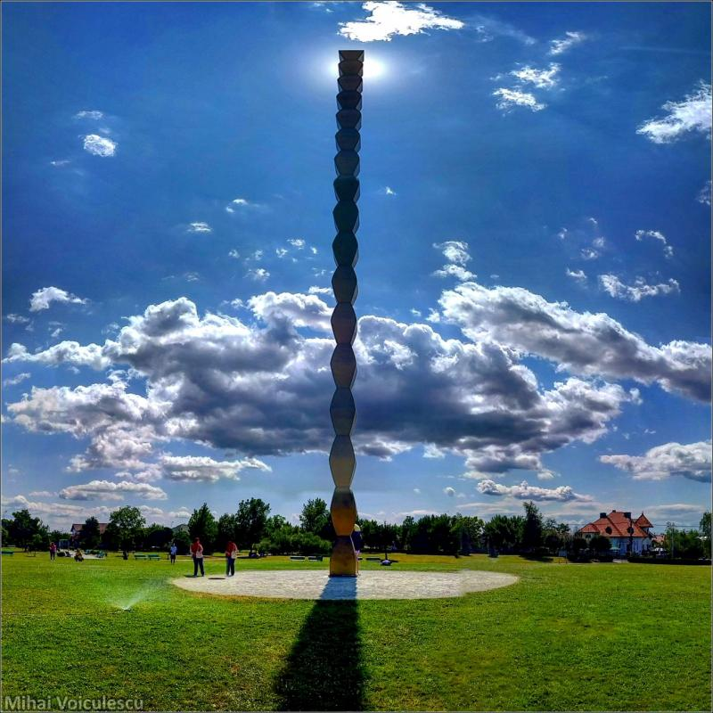

Coloana fără Sfârșit este o operă emblematică a lui Constantin Brâncuși, realizată în 1938. Aceasta reprezintă un simbol al aspirației și al spiritualității, exprimând conceptul de infinit prin forma sa unică de coloană în zig-zag.
Brâncuși a dedicat această sculptură eroilor căzuți în Primul Război Mondial și a gândit-o ca parte din ansamblul de la Târgu Jiu, alături de Masa Tăcerii și Poarta Sărutului.
